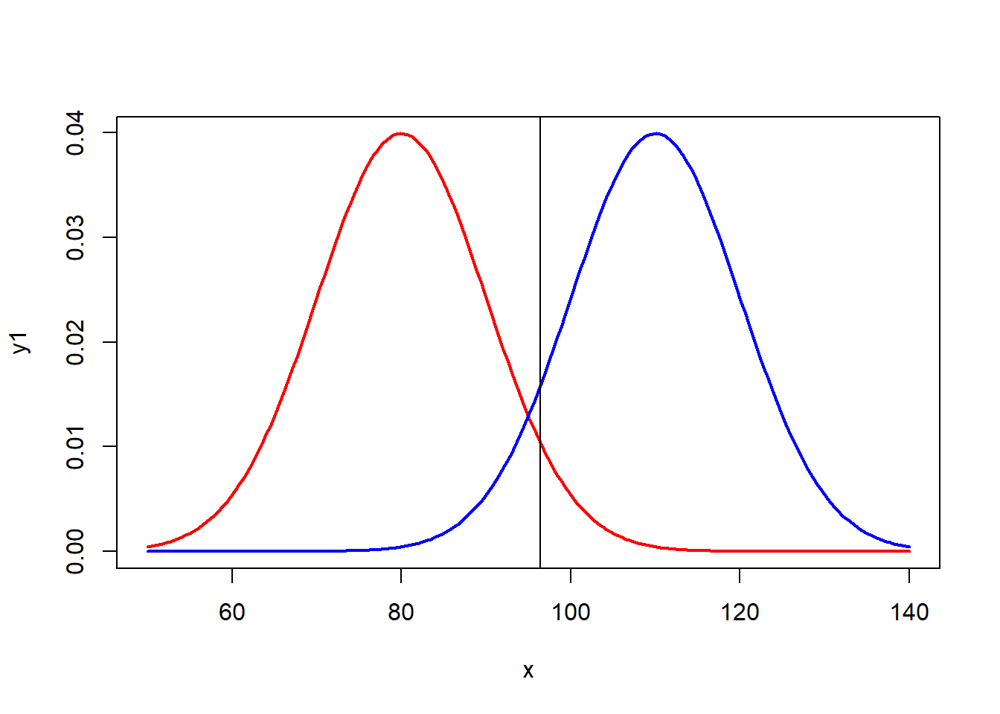
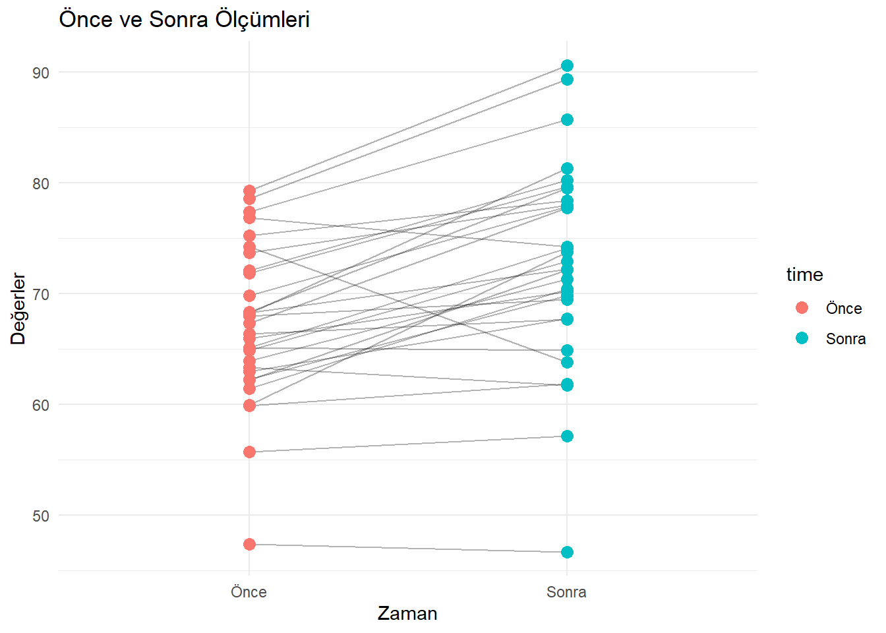

sd <- 4
M <- 13
X <- 16.5
n <- 4
sd_hata <- sd / sqrt(n)
z <- (X - M) / sd_hata
z[1] 1.75qnorm(c(0.025, 0.975)) # Kritik değerler[1] -1.959964 1.959964Hipotez testi, belirli bir iddianın (hipotezin) doğru olup olmadığını test etmek için kullanılan bir istatistiksel yöntemdir. Araştırmacılar, hipotez testlerini genellikle anlamlılık düzeyleri (alfa düzeyi) ile değerlendirir.
Problem: 2 yaşındaki bebeklerin ağırlığı \(\mu=13\) kg ve \(\sigma=2\) kg olan normal bir dağılım oluşturmaktadır. Araştırmacılar, temas yoluyla (dokunma, kucaklama gibi) bebeklerin gelişiminin hızlanabileceği tezini test etmek istemektedir. Bu amaçla \(n=16\) olan yeni doğmuş bebeklerden bir örneklem oluşturulmuş ve aileleri, bebeklerine nasıl temas etmeleri gerektiği konusunda bilgilendirilmiştir. Bebekler 2 yaşına geldiğinde ağırlıkları ölçülmüş ve ortalama hesaplanmıştır. Şu durumlar değerlendirilir:
Alfa düzeyi (\(\alpha\)), sıfır hipotezinin doğru olduğu durumlarda düşük olasılıklı örneklemleri belirtmek için kullanılan bir olasılık değeridir. Yaygın olarak kullanılan alfa değerleri şunlardır:
Alfa düzeyi ile belirlenen uç değerlerin oluşturduğu bölgeye kritik bölge denir. Eğer araştırma sonucunda elde edilen değerler kritik bölgede konumlanıyorsa, sıfır hipotezi reddedilir.
I. Tip hata, sıfır hipotezinin doğru olduğu halde reddedilmesi durumunda ortaya çıkar. Yani:
II. Tip hata, gerçekte yanlış olan bir sıfır hipotezinin reddedilmemesi durumunda ortaya çıkar. Bu durumda:
sd <- 4
M <- 13
X <- 16.5
n <- 4
sd_hata <- sd / sqrt(n)
z <- (X - M) / sd_hata
z[1] 1.75qnorm(c(0.025, 0.975)) # Kritik değerler[1] -1.959964 1.959964qnorm(0.95) # Yönlü kritik değer[1] 1.644854Bir popülasyonun normal dağılıma sahip olduğu ve \(\mu=80\), \(\sigma=10\) olduğu bilinmektedir. Bu popülasyondan \(n=25\) olan bir örneklem seçilmiş ve uygulama sonunda \(\bar{X}=81\) bulunmuştur. \(\alpha=0.05\) iken uygulamanın etkisi test edilmiştir.
M <- 80
sd <- 10
n <- 25
X <- 81
sd_hata <- sd / sqrt(n)
z <- (X - M) / sd_hata
z[1] 0.5qnorm(c(0.025, 0.975)) # Kritik değerler[1] -1.959964 1.959964Kritik bölgenin sınırı \(z=1.96\) ise:
\(H_0\) reddedilemez.
Eğer \(n=400\) olsaydı:
n <- 400
sd_hata <- sd / sqrt(n)
z <- (X - M) / sd_hata
z[1] 2qnorm(c(0.025, 0.975))[1] -1.959964 1.959964Bir örneklemin, belirli bir popülasyona ait olup olmadığını test etmek için kullanılan bir yöntemdir. z testi için:
t testi, popülasyonun standart sapması bilinmediğinde örneklem standart sapmasının kullanıldığı bir testtir. 1908’de William Gosset tarafından geliştirilmiştir.
t.test(1:10, y = c(7:20))
Welch Two Sample t-test
data: 1:10 and c(7:20)
t = -5.4349, df = 21.982, p-value = 1.855e-05
alternative hypothesis: true difference in means is not equal to 0
95 percent confidence interval:
-11.052802 -4.947198
sample estimates:
mean of x mean of y
5.5 13.5 t.test(extra ~ group, data = sleep)
Welch Two Sample t-test
data: extra by group
t = -1.8608, df = 17.776, p-value = 0.07939
alternative hypothesis: true difference in means between group 1 and group 2 is not equal to 0
95 percent confidence interval:
-3.3654832 0.2054832
sample estimates:
mean in group 1 mean in group 2
0.75 2.33 Kırmızı dağılım, \(H_0\) hipotezi doğru olduğunda örneklem ortalamalarının dağılımını ifade eder. Mavi dağılım ise \(H_0\) hipotezi doğru olmadığında örneklem ortalamalarının dağılımıdır. Şimdi,\(H_0\) nin doğru olduğu durumda, evrenden çok sayıda örneklem seçtiğimizi düşünelim.
Ortalamaları 80 olan bir evrenden seçilen örneklemleri ele alalım. Seçilen bir örneklem ortalaması 80’e yakın bir değer olabilir, 90 olabilir, hatta nadir de olsa 120 veya 130 gibi bir değere de ulaşabilir. Kırmızı dağılımda, 95. yüzdelik dilime dikey bir çizgi çekelim. Bu çizgi, tek yönlü t testi için sınır değeri temsil eder. Eğer bu çizginin sağında bir değer elde edilirse, \(H_0\) reddedilir. Ancak, seçilen örneklemlerin %5’inde, şans eseri bu sınır değerden daha büyük bir değer elde edilebilir. Bu durum, aynı zamanda I. tip hata olarak adlandırılır.
I. tip hata, doğru olan \(H_0\) hipotezini reddetmek anlamına gelir.
# TEK KUYRUK TEST
x<-seq(50,140,length=200)
y1<-dnorm(x,80, 10)
plot(x,y1,type='l',lwd=2,col='red')
y2<-dnorm(x,110, 10)
lines(x,y2,type='l',lwd=2,col='blue')
abline(v=qnorm(0.95,80,10)) 
# eger testi yonsuz yapacak olursak
# 2.5 ve 97.5 luk yuzdeliklere cektigim cizgiler
# kritik bolgenin alanini belirleyecektir.
# yani secilen orneklemlerin %5'i
# 60'dan kucuk ve 100'den buyuk bolgeye duserse
# ho reddedilecektir.
# bu bolge ayni zamanda I. tip hata bolgesidir.
x=seq(50,140,length=200)
y1=dnorm(x,80, 10)
plot(x,y1,type='l',lwd=2,col='red')
y2=dnorm(x,110, 10)
lines(x,y2,type='l',lwd=2,col='blue')
abline(v=qnorm(0.025,80,10))
abline(v=qnorm(0.975,80,10))
ALFA bolgesini tarama
p degeri alfaya esit ya da daha kucuk ise ho reddeilir.
x=seq(50,140,length=200)
y1=dnorm(x,80, 10)
plot(x,y1,type='l',lwd=2,col='red')
y2=dnorm(x,110, 10)
lines(x,y2,type='l',lwd=2,col='blue')
cord.x1 <- c((round(qnorm(0.975, 80, 10))),seq((round(qnorm(0.975, 80, 10))), 120,1),120)
cord.y1 <- c(0,dnorm(seq((round(qnorm(0.975, 80, 10))), 120, 1), 80, 10),0)
polygon(cord.x1,cord.y1,col='red')
cord.x2 <- c(50,seq(50,round(qnorm(0.025, 80, 10),1)),round(qnorm(0.025, 80, 10)))
cord.y2 <- c(0,dnorm(seq(50,round(qnorm(0.025, 80, 10),1)), 80, 10),0)
polygon(cord.x2,cord.y2,col='red')
mavi dagilim dogru ise ve secilen yuksek ortalamalari dagilimlarla kirmizi ho hipotezi rededilir.
Alternatif hipotez dogru ise yanlis olan Ho hiptezini red edememe durumu
x=seq(50,140,length=200)
y1=dnorm(x,80, 10)
plot(x,y1,type='l',lwd=2,col='red')
y2=dnorm(x,110, 10)
lines(x,y2,type='l',lwd=2,col='blue')
cord.x2<- c(0,seq((round(1-qnorm(0.025,110,10))),100,1),100)
cord.y2 <- c(0,dnorm(seq((round(1-qnorm(0.025, 110, 10))), 100, 1), 110, 10),0)
polygon(cord.x2,cord.y2,col='red')
abline(v=round(qnorm(0.975, 80, 10, lower.tail=T)))
abline(v=round(qnorm(0.025, 80, 10, lower.tail=T)))
text(95,0.005, "? ",xpd=5)
# Istatistiksel guc ise 1-beta,
# yanlis olan Ho'i reddetme
x<- seq(50,140,length=200)
y1<- dnorm(x,80, 10)
plot(x,y1,type='l',lwd=2,col='red')
y2<- dnorm(x,110, 10)
lines(x,y2,type='l',lwd=2,col='blue')
cord.x2<- c(0,seq((round(1-qnorm(0.025,110,10))),100,1),100)
cord.y2 <- c(0,dnorm(seq((round(1-qnorm(0.025, 110, 10))), 100, 1), 110, 10),0)
polygon(cord.x2,cord.y2,col='red')
abline(v=round(qnorm(0.975, 80, 10, lower.tail=T)))
abline(v=round(qnorm(0.025, 80, 10, lower.tail=T)))
cord.x1 <- c(100,seq(round(qnorm(0.975, 80, 10, lower.tail=T)), 140,1),140)
cord.y1 <- c(0,dnorm(seq(round(qnorm(0.975, 80, 10, lower.tail=T)),140, 1), 110, 10),0)
polygon(cord.x1,cord.y1,col='6')
text(95,0.005, "B",xpd=5)
text(115,0.005, "1-B ",xpd=5)
t-testleri, iki grup arasındaki ortalama farklarını karşılaştırmak için kullanılan parametrik testlerdir. Üç temel t-testi türü vardır:
Tek örneklem t-testi, bir örneklem ortalamasının belirli bir değerden farklı olup olmadığını test eder.
Örnek veri oluşturma
set.seed(123)
data <- rnorm(100, mean = 52, sd = 5)t-testi uygulama
t_test_result <- t.test(data, mu = 50)Sonuçları gösterme
t_test_result
One Sample t-test
data: data
t = 5.3725, df = 99, p-value = 5.159e-07
alternative hypothesis: true mean is not equal to 50
95 percent confidence interval:
51.54642 53.35764
sample estimates:
mean of x
52.45203 Sonuçları daha okunaklı bir tablo halinde sunalım:
library(knitr)
library(dplyr)
library(kableExtra)
t_test_table <- data.frame( İstatistik = c("t-değeri", "Serbestlik Derecesi", "p-değeri", "Güven Aralığı", "Örneklem Ortalaması"), Deger = c( round(t_test_result$statistic, 3), t_test_result$parameter, round(t_test_result$p.value, 4), paste(round(t_test_result$conf.int, 2), collapse = " - "), round(t_test_result$estimate, 2) ) )
kable(t_test_table, caption = "Tek Örneklem T-testi Sonuçları") %>% kable_styling(bootstrap_options = c("striped", "hover"))| İstatistik | Deger |
|---|---|
| t-değeri | 5.372 |
| Serbestlik Derecesi | 99 |
| p-değeri | 0 |
| Güven Aralığı | 51.55 - 53.36 |
| Örneklem Ortalaması | 52.45 |
Bağımsız iki örneklem t-testi, iki bağımsız grubun ortalamalarını karşılaştırır.
Örnek veri oluşturma
set.seed(456)
group1 <- rnorm(50, mean = 25, sd = 5)
group2 <- rnorm(50, mean = 28, sd = 5)t-testi uygulama
ind_t_test <- t.test(group1, group2)Sonuçları gösterme
#| code-fold: false
ind_t_test
Welch Two Sample t-test
data: group1 and group2
t = -2.7148, df = 96.986, p-value = 0.00785
alternative hypothesis: true difference in means is not equal to 0
95 percent confidence interval:
-4.7291397 -0.7346981
sample estimates:
mean of x mean of y
25.73691 28.46883 Sonuçları daha okunaklı bir tablo halinde sunalım:
#| code-fold: false
library(ggplot2)
data_long <- data.frame( value = c(group1, group2), group = rep(c("Grup 1", "Grup 2"), each = 50) )
ggplot(data_long, aes(x = group, y = value, fill = group)) +
geom_boxplot() +
geom_jitter(width = 0.2, alpha = 0.5) + theme_minimal() +
labs(title = "Grup 1 ve Grup 2 Karşılaştırması", x = "Gruplar", y = "Değerler")
Bağımlı örneklem t-testi, aynı bireylerin iki farklı durumda ölçülen değerlerini karşılaştırır.
Örnek veri oluşturma
#| code-fold: false
set.seed(789)
before <- rnorm(30, mean = 70, sd = 10)
after <- before + rnorm(30, mean = 5, sd = 5)t-testi uygulama
#| code-fold: false
paired_t_test <- t.test(before, after, paired = TRUE)Sonuçları gösterme
#| code-fold: false
paired_t_test
Paired t-test
data: before and after
t = -5.5709, df = 29, p-value = 5.199e-06
alternative hypothesis: true mean difference is not equal to 0
95 percent confidence interval:
-7.505526 -3.474479
sample estimates:
mean difference
-5.490002 #| code-fold: false
paired_data <- data.frame( time = rep(c("Önce", "Sonra"), each = 30), value = c(before, after), subject = rep(1:30, 2) )
ggplot(paired_data, aes(x = time, y = value, group = subject)) +
geom_line(alpha = 0.3) +
geom_point(aes(color = time), size = 3) + theme_minimal() +
labs(title = "Önce ve Sonra Ölçümleri", x = "Zaman", y = "Değerler")
T-testlerinin varsayımları karşılanmadığında (örneğin, normallik varsayımı), non-parametrik testler kullanılır. T-testlerinin non-parametrik karşılıkları şunlardır:
Örnek veri oluşturma
#| code-fold: false
set.seed(101)
data_np <- rexp(50, rate = 0.5)Wilcoxon işaretli sıra testi
wilcox_test <- wilcox.test(data_np, mu = 2)Sonuçları gösterme
wilcox_test
Wilcoxon signed rank test with continuity correction
data: data_np
V = 357, p-value = 0.006873
alternative hypothesis: true location is not equal to 2Örnek veri oluşturma
#| code-fold: false
set.seed(102)
group1_np <- rexp(40, rate = 0.5)
group2_np <- rexp(40, rate = 0.7)Mann-Whitney U Testi
mw_test <- wilcox.test(group1_np, group2_np)Sonuçları gösterme
mw_test
Wilcoxon rank sum exact test
data: group1_np and group2_np
W = 948, p-value = 0.1566
alternative hypothesis: true location shift is not equal to 0#| code-fold: false
np_data_long <- data.frame( value = c(group1_np, group2_np), group = rep(c("Grup 1", "Grup 2"), each = 40) )
ggplot(np_data_long, aes(x = group, y = value, fill = group)) +
geom_boxplot(trim = FALSE) +
geom_boxplot(width = 0.1, fill = "white") + theme_minimal() +
labs(title = "Grup 1 ve Grup 2 Karşılaştırması (Non-parametrik)", x = "Gruplar", y = "Değerler")